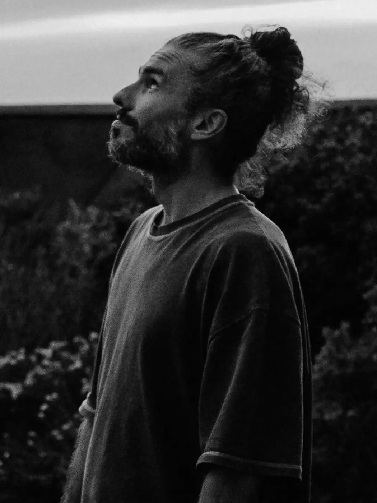
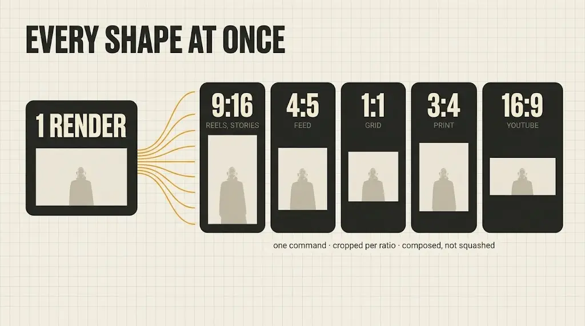
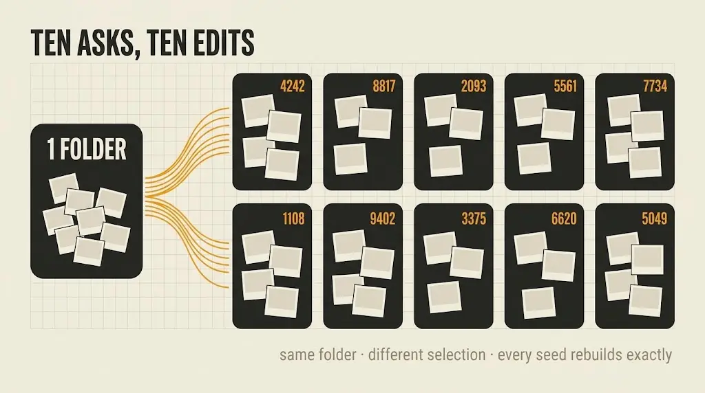
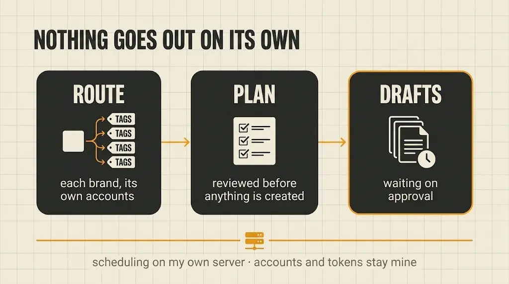
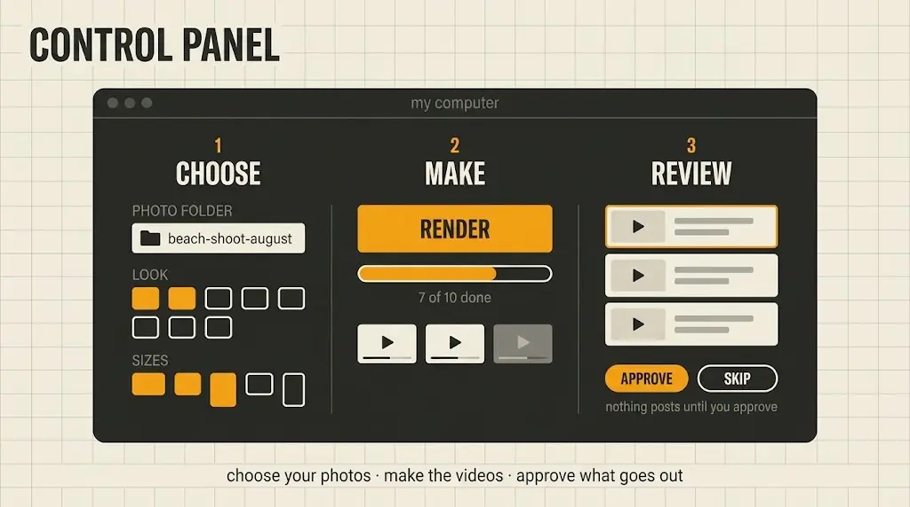

I love making the photos. The shoot, the edit, the moment a frame finally lands. What comes after is where I stall. Writing the caption, building the slideshow, cutting a version for every platform that wants a different shape. A small pile of effort between finished work and anyone seeing it, and for years that pile won.
So the work stacked up in folders. Good work, sitting on a drive.
Full Send is the thing I built to get out of my own way. I edit my photos, export them to a folder, and point the pipeline at it. I have posted daily since [DATE].
This one had no client. I built it for myself, so there was nobody to negotiate the brief down with. I did that for years.
The ChallengeYou know the folder. Last month’s shoot, edited, exported, sitting there. You meant to post it. Then the caption needed writing, the square crop needed making, the vertical version needed something to fill the empty space, and it was easier to go and shoot something new. The work is finished. It just never leaves your drive.
Take the part I avoid and remove it. Not speed it up. Remove it.
One folder of exported photos goes in. Finished video comes out, in every aspect ratio I publish to, on motion templates I designed rather than whatever a preset library offers.
I would know it worked if I was still using it in a month.
The entire interface is a folder of photos. I export where I always export, and that directory is the input. Nothing to import, no timeline to open.
Sixteen custom motion templates, each a different way of moving through a set of photos. A globe of images turning on its axis. A grid that pans and drifts. Cards scattered in 3D space, scaling as they pass the camera.
Built rather than licensed, so nothing looks like the template pack everyone else posts from.
Vertical for stories and reels, square for the grid, wide for YouTube, four-five because it takes the most room in a feed. One command renders all of them, cropping per ratio, so a portrait frame in a wide render is composed rather than squashed.

Ask for ten and you get ten different edits, not one edit ten times. Each pulls its own selection, and the picker favours photos it has used least, so the same three frames stop leading every post. Every variation carries its seed, so a keeper rebuilds exactly.

A render is only finished once it leaves the machine. Each brand I run has its own accounts wired up, so output routes to the right ones without me picking every time.
Before anything is created the panel writes a plan. Which post, which accounts, which file. I read it, and nothing moves until I say so.
Everything lands as a draft in the scheduler, waiting on me. Nothing publishes itself. Scheduling runs on my own server, so the accounts and the tokens stay mine.

A browser panel on top of it, because a tool that needs a terminal is a tool I would stop opening. Pick the folder, tick the templates and ratios, hit render. It prints the command it runs, which matters the day something breaks.

The decision about whether to post is gone, and that decision was always what killed it. Shoot, edit, export, point it at the folder. I have posted daily since [DATE], from work that used to reach nobody.
The photos were always finished. Now they leave the drive.